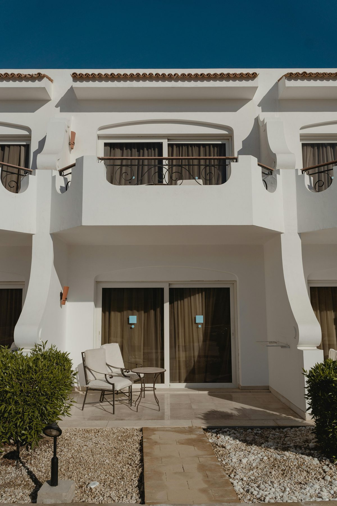
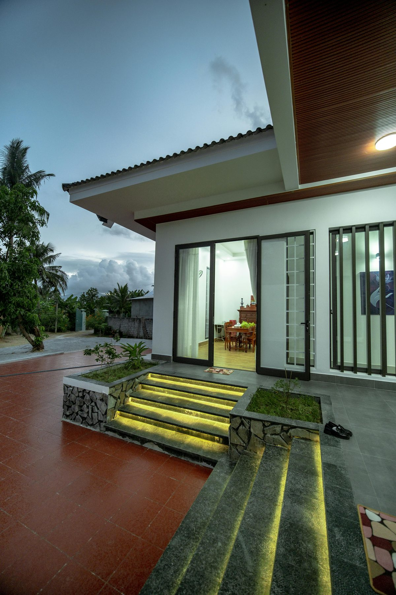
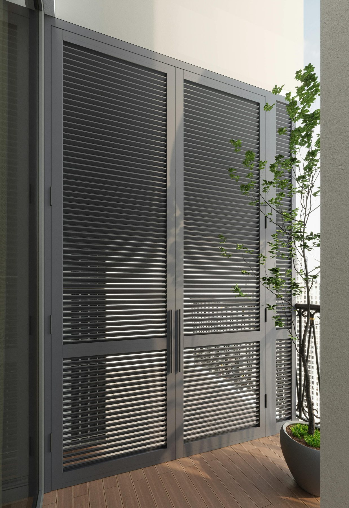
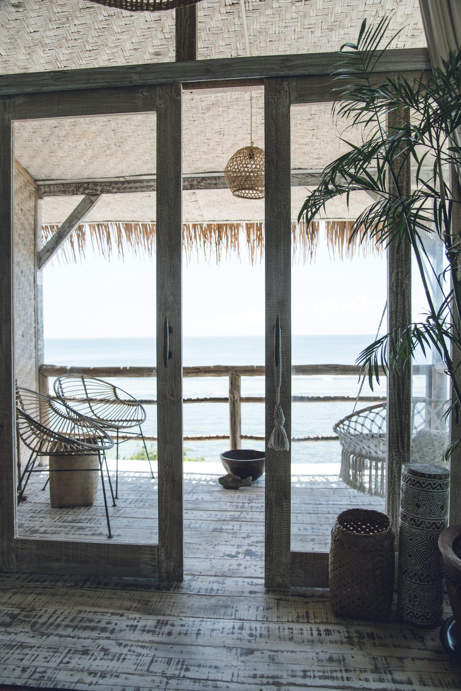
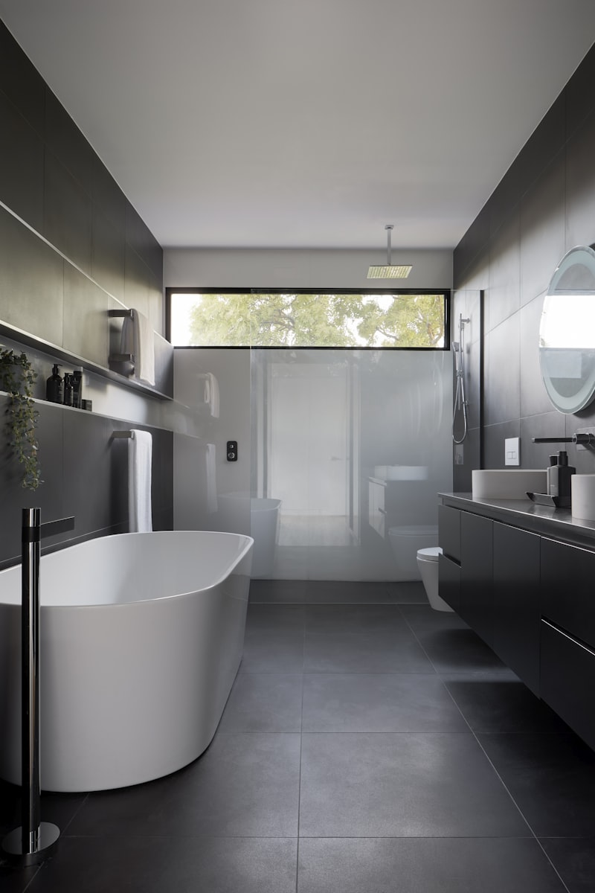
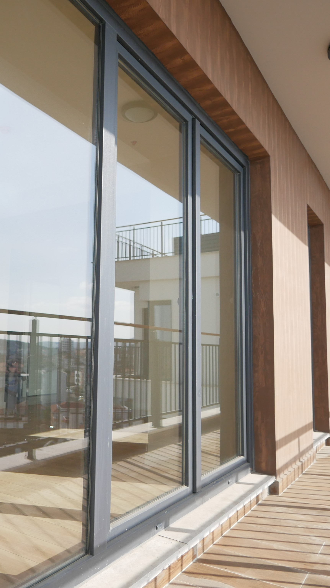
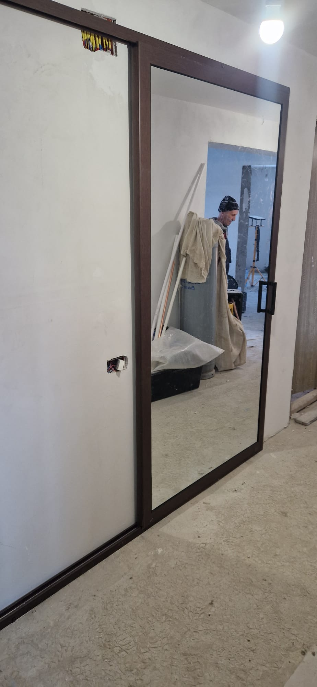
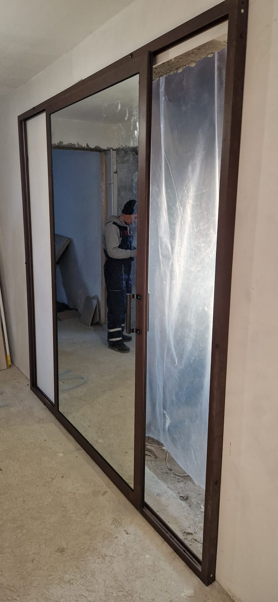
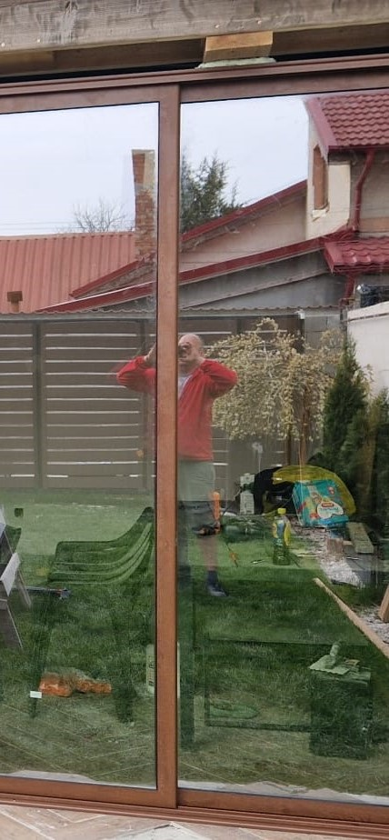
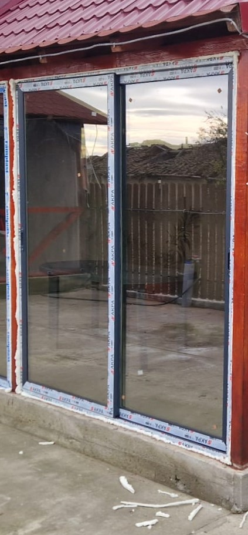

Vilă cu sistem glisant
Sistem glisant pentru vile moderne, cu deschidere largă către exterior, oferind acces facil la grădină și integrare perfectă cu designul casei.
Sisteme glisante din sticlă pentru terase, balcoane și spații comerciale. Montaj profesionist în Constanța.
Configurăm soluții glisante pentru terase, balcoane și spații comerciale, cu accent pe lumină și funcționalitate.

Sistem glisant pentru vile moderne, cu deschidere largă către exterior, oferind acces facil la grădină și integrare perfectă cu designul casei.

Deschidere elegantă către terasă pentru case moderne, cu profile subțiri și suprafețe vitrate generoase pentru maximă lumină naturală.

Sistem glisant premium pentru balcoane, cu design modern și finisaje de calitate, oferind etanșare excelentă și rezistență la intemperii.

Deschidere luminoasă spre balcon cu sistem glisant, ideal pentru spații mici, oferind ventilare naturală și acces ușor la exterior.

Compartimentări vitrate mobile pentru spații comerciale sau terase, cu flexibilitate maximă și aspect elegant.

Spațiu locativ contemporan cu balcon și deck din lemn, integrând sisteme glisante pentru acces facil și design armonios.

Aspect premium

Compartimentare modernă

Finisaj elegant

Suprafețe vitrate
Folosim profile PVC eficiente, potrivite pentru suprafețe vitrate mari, cu accent pe stabilitate, etanșare și aspect modern.
Sistemele sunt configurate cu feronerie de calitate și componente MACO, pentru glisare corectă, închidere sigură și utilizare confortabilă în timp.
Soluțiile glisante sunt gândite pentru lumină naturală, acces facil și protecție bună împotriva curentului, umezelii și pierderilor de căldură.
Realizăm măsurători, montaj și reglaje finale pentru funcționare lină, aliniere corectă și finisaj curat.